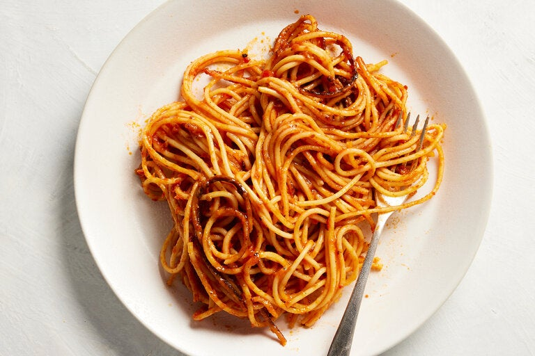

Odin Recipes
Spaghetti

Description
This spicy one-pot pasta dish is common on menus in Bari, Italy, but can easily be prepared at home. Like many classic dishes, there are a couple versions of its origin story. According to one, a distracted chef accidentally left his pasta cooking until the sauce burned, while another attributes the recipe title to the dish’s killer spiciness. The method involves treating spaghetti as you would risotto: Heat some garlic, red-pepper flakes and tomato paste in oil, then add the pasta and cook it gently, slowly adding tomato broth little by little. Once the pasta soaks up the flavorful liquid, it starts to char. Bari is famous for serving this dish extra “piccante,” but at home, you can make it as mild or spicy as you wish.
Ingredients
Yield: 4 servings
- 2½cups jarred or homemade tomato sauce
- ¼cup extra-virgin olive oil
- 2 teaspoons of red-pepper flakes, or more to taste
- 1 garlic clove, thinly sliced
- 2 teaspoons of tomato paste
- 1 pound (uncooked) spaghetti
Steps
- In a medium saucepan, heat the tomato sauce with 3½ cups water over medium heat. Stir to combine and bring the tomato broth to a simmer.
- Meanwhile, heat the olive oil in a 12- to 14-inch nonstick or cast-iron skillet over medium.
- Add red-pepper flakes and garlic to the skillet and cook, stirring, until garlic is just beginning to brown, about 2 minutes. Add the tomato paste, press it into the pan to spread it out, and cook until it begins to melt and toast.
- Using a ladle or big spoon, add about ½ cup of the warm tomato broth to the pan and swirl to combine with the other ingredients.
- Carefully place the spaghetti into the pan on top of the sauce. (The spaghetti should fit lengthwise, but you can break the strands to fit in your pan, if need be.) Ladle 1 cup of the tomato broth on top of the pasta. Using a fork, move the spaghetti strands until evenly coated, pressing the spaghetti to distribute the broth until it evenly coats the pasta.
- Allow the pasta to cook for 3 minutes. Once the broth is absorbed, add 1½ cups tomato broth and repeat the process. As the pasta softens, move the strands out so they begin to create an even layer in the skillet.
- Add another 1½ cups broth. Rearrange the pasta again so it’s in an even layer and covered in liquid, and cook another 3 minutes.
- At the 9-minute mark, the pasta should begin to crackle and sizzle. Gently lift the pasta and peek underneath it. There should be crispy, almost burnt pieces. If so, flip the pasta. If not, increase heat a bit until it crisps, then flip and continue.
- Once the pasta is flipped, add the remaining broth. At this point, the pasta should be soft enough to easily move in the pan. Continue cooking until broth is absorbed and pasta is cooked through but still al dente. (If your pasta is still on the firmer side, you can add a splash of water, if needed, and cook until al dente.)
- Divide among bowls. Serve immediately.